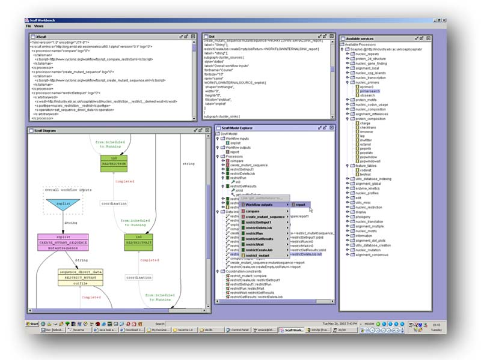

Scufl Workbench
tmo@ebi.ac.uk,
23rd May 2003
This point
release of the Taverna project contains an application called the Scufl Workbench.
This is intended to allow you to create, edit and otherwise tinker with workflows
based on the Scufl language. It is not in its final form, but there is sufficient
editing functionality to produce new workflows that are at least vaguely functional.
An instance of the workbench contains exactly one Scufl model, and provides
zero or more arbitrary view and controller components over that model. It looks
something like this :

Launching
the workbench
ant tools.workbench [-Dfile=your_workflow.xml]
The easiest
way to launch the workbench is from ant; obviously you could launch it directly
(the main class is org.embl.ebi.escience.scuflui.workbench.Workbench) but
you would have to add all the libraries to your classpath and ant takes care
of this automatically. If you specify a file as the 'file' parameter (or the
first argument if you're not using ant) this will be treated as an xscufl
definition file and the workbench will start off with the model populated
from this file. If you don't, you start off with an empty model. Note that
the tools.workbench task doesn't compile the code, so should only be run after
'ant jar'.
Available
components within the workbench
The workbench
is intended to act as a container to assorted user interface components. These
components act as either views, controllers or both on the underlying ScuflModel
instance. For example, the graphical view is only a view, the service panel
only a controller and the explorer an example of both roles. View components
respond to model events, so they will always display the current state of
the model, there is no need to explicitly refresh them. The available components
in this release are as follows.
- Scufl model explorer
This shows the state of the current model as a tree. At the top level are
the different types of entities within a scufl model - overall workflow
inputs and outputs, processors, data links and coordination controls. Processor
nodes may be expanded to reveal their inputs and outputs. Most nodes have
context menus associated with them, see the 'how do I...' section for more
information, or just have a play around.
- XScufl view
This shows the current model as XScufl. This is what will be saved if you
select 'Save as XScufl' from the file menu. It is not editable, and merely
presents a view on the model.
- Dot view
Similarly to the XScufl view, this shows the dot text for the current model.
This was really only so I could figure out what was going wrong with the
graphical display, but you might find it interesting.
- Graphical view
This shows a graphical view of the workflow. This view requires you to have
the dot tool and its associated libraries installed on your machine, and
present on the path, otherwise the application won't be able to find it.
This component sends the dot view to dot, reading the result back into a
buffered image and updating the display.
- Available service panel
This panel shows potential processors that can be added to the workflow
model. It is entirely a controller, there is no workflow state reflected
in it. Initially it is configured to show the services available through
soaplab at the EBI, and also show the xembl service as an example of a WSDL
processor creator (I'm not sure whether the xembl service is actually maintained).
Context menus on this component allow you to add new processors to the workflow,
and also to add new scavengers - components that fetch sets of service factories
- to the service panel.
These
components may be displayed, or additional instances created, by selecting
the appropriate option from the 'view' menu in the main window. The 'file'
menu provides import, export and model reset operations.
How
do I...?
- ...add
my services to the service panel?
You need to create a new scavenger. Right click on the 'Available Processors'
node at the top of the service panel. This should give you a menu from which
you can choose which type of scavenger you want.
- WSDL
services - this is the most common type of scavenger you
will want to create, and supposes that you have some web service somewhere
that you want to add to your workflow. You need to enter the location
of the WSDL into the dialog that appears, and the workbench should go
away, look at the WSDL file, extract all available port types and operations
and display them in the service panel.
- Soaplab
services - to add a new soaplab installation to the service
panel you need to specify the base URL to the soaplab analysis service.
For example, if your soaplab installation has its analysis factory endpoint
at http://foo.bar/soaplab/AnalysisWS then you should give the argument
http://foo.bar/soaplab/ to create the scavenger.
- ...import
services from my workflow into the service panel?
The context menu described above to add new scavengers has an additional option
to collect scavengers from your current scuf model. This will attempt to locate
appropriate scavenger modules that would be capable of building the processors
found in your model definition. Specifically, it will look for any references
to WSDL documents it doesn't already know about and import those.
- ...create
a new service in the workflow?
Assuming you have correctly created the appropriate scavenger (see above),
you should be able to add an instance of any service within the service selection
panel by expanding the service selection tree until you have a processor factory
node (denoted by the coloured chip icons). Right clicking on this node will
give you a menu with the 'add to workflow' option, selecting this will in
turn give you a dialog requesting a name for the new service, assuming your
name is valid (i.e. alphanumeric plus the underscore character and not matching
anything already in the workflow) this will create a new processor in the
workflow; the addition should be reflected immediately in any view components
you have open.
- ...link
services in the workflow together?
You link two processors, or a processor and an external port, by using the
context menu in the Scufl Model Explorer panel. Specifically, you always link
from an output port to an input port, so the link menu will only appear if
you click on an output port (or a workflow input). If you cannot see any output
ports, you may need to expand the processor node to show them. Right clicking
on an output port brings up a menu from which you can select an input port
to link to, selecting the port will create the link, and the views should
reflect the change.
- ...create
new workflow inputs and outputs?
The 'Workflow inputs' and 'Workflow outputs' nodes in the Scufl Model Explorer
have an option in their right click menus to create a new input or output.
Selecting this option will bring up a dialog box into which you must enter
the name for the port. Assuming your name is valid, the port will be created
and the views will reflect the change.
- ...load
and save workflow definitions?
The 'file' menu in the top level menu bar provides these functions. You can
import a workflow into the existing model (note that this does not clear the
model, it adds components subject to name clashes), save the current model
as XScufl, save as dot (three versions, choose the one you want from the submenu)
or clear the current model. If you want to completely restart the model from
a new workflow, you'll need to clear it then import.
- ...load
a workflow from the web?
The 'file' menu contains an option to load an XScufl definition file from
a URL. You simply enter the URL to your definition and the editor will import
it into the model.
- ...delete
things from my workflow?
In general if it is possible to delete something from the workflow there will
be a 'remove from model' option in the right click menu available from the
Scufl Model Explorer panel. To completely reset the workflow you should use
the 'Reset model data' option in the 'file' menu of the main window.
- ...create
coordination constraints?
The only kind of coordination constraint the enactor currently supports is
one that prevents a processor moving from scheduled to running until another
processor has completed. To create an instance of this kind of constraint,
you can use the context menu on a processor node in the scufl model explorer
panel. Select the processor that you want to be controlled by the constraint,
then choose the processor that guards the state transition from the submenu,
you should see the new constraint in any open views you happen to have.
- ...change
the graphical display?
There are three possible policies for the graphical display; display no ports,
only display bound ports and display everything. If you right click on the
graphic display panel you should see a menu, choose the appropriate policy
and the display will update. The default value is to show only bound ports,
this is a sensible comprimise between information richness and diagram size,
but the other values have their uses. Have a play.